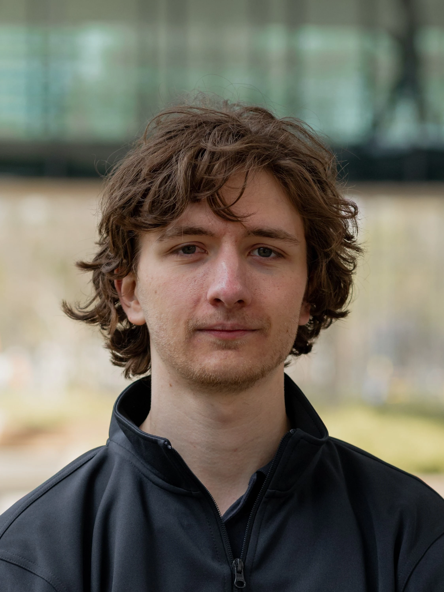

Hey, I'm Max
I am an all-round industrial designer that likes to work on turning ideas into reality. With a
focus
on
innovative, inspiring, and sustainable concepts.
Identity
My name is Max Crutzen, personally and professionally I would describe myself as a doer and a
curious
person. From when I was small I have always liked a wide variety of topics. From history to
economy,
art, drawing, fixing and creating. A big character trait is that I don’t like discussing
something over
and over when trying something out is just a few steps away. This is also why designing through
prototyping is one of the parts of the design process I enjoy the most. I do not consider myself
a
leader. However, I will definitely not work in the background either. When I believe in a goal
of a
project I throw my heart into it. Knowing the ins and outs of it and throwing all my skills at
it to
make it happen.
As partially mentioned before what I enjoy the most in a design process is the realization of an idea. It’s the part of a project in which I feel like my personal values are also the easiest to way in the design process. Applying fair design for the user, making products environmentally friendly, and making sure no unnecessary waste is created is very much in your hands when you make decisions about materials, aesthetics, CAD designs for the parts, the bill of materials, and production method. I feel this is the point in the process where you have a lot of influence on the way your product is going to turn out. This is the main reason I enjoy this outside of being intrinsically motivated by creating. What I mean by the realization of an idea is the process from the conceptualization with the early quick and dirty sketches and prototypes to the final product which is production ready. This identity was confirmed for me as my role within TU/ecomotive. All the ideas for the car with zero emissions during its lifetime would not have been possible if the right decisions were not made when it comes to the design process and production choices of the car.
My areas of interest grew a lot during my bachelor's. My interests at first were in the area of product design and city design. But this quickly grew with an interest to design for clients with specific cases, but also a lot towards the topic of mobility. Design for repairability and extended lifetime of products became a strong interest for me. Since it fits my values of sustainable design from a societal and environmental point of view.
When it comes to hard skills I feel that my ability to get an idea on paper that looks realistic and real is a real asset. I also have experience with other methods of rendered concept making like blender or photoshop. Outside of that, I can also work with CAD modeling very well. Both solid body and surface body modeling. For the production of these CAD models, I have a lot of experience with 3d printing, both FDM and SLA printing. Additionally, I also have experience with laser cutting. I developed these skills with my work at TU/e innovation space where I work as a service desk assistant. Outside of these maker skills, this job also teaches me a lot about quick problem-solving skills. Students come by with unique problems all the time. Having a quick solution ready is something that I learned quickly as a service desk assistant.
As partially mentioned before what I enjoy the most in a design process is the realization of an idea. It’s the part of a project in which I feel like my personal values are also the easiest to way in the design process. Applying fair design for the user, making products environmentally friendly, and making sure no unnecessary waste is created is very much in your hands when you make decisions about materials, aesthetics, CAD designs for the parts, the bill of materials, and production method. I feel this is the point in the process where you have a lot of influence on the way your product is going to turn out. This is the main reason I enjoy this outside of being intrinsically motivated by creating. What I mean by the realization of an idea is the process from the conceptualization with the early quick and dirty sketches and prototypes to the final product which is production ready. This identity was confirmed for me as my role within TU/ecomotive. All the ideas for the car with zero emissions during its lifetime would not have been possible if the right decisions were not made when it comes to the design process and production choices of the car.
My areas of interest grew a lot during my bachelor's. My interests at first were in the area of product design and city design. But this quickly grew with an interest to design for clients with specific cases, but also a lot towards the topic of mobility. Design for repairability and extended lifetime of products became a strong interest for me. Since it fits my values of sustainable design from a societal and environmental point of view.
When it comes to hard skills I feel that my ability to get an idea on paper that looks realistic and real is a real asset. I also have experience with other methods of rendered concept making like blender or photoshop. Outside of that, I can also work with CAD modeling very well. Both solid body and surface body modeling. For the production of these CAD models, I have a lot of experience with 3d printing, both FDM and SLA printing. Additionally, I also have experience with laser cutting. I developed these skills with my work at TU/e innovation space where I work as a service desk assistant. Outside of these maker skills, this job also teaches me a lot about quick problem-solving skills. Students come by with unique problems all the time. Having a quick solution ready is something that I learned quickly as a service desk assistant.
vision
I believe in a bright future for humanity. A future that is socially and environmentally
friendly. A
future in
which companies don't create products just to sell new units. A future in which open-source
software
and
hardware become standard practice in the market. I believe that the only limit to our reality is
our
imagination
and that my role as a designer is to help in this process of turning imagination into reality.
However, I feel there is a wrong trend in society in which it’s normal practice for companies that take advantage of a system of laws and loopholes to make the largest amount of profit possible when selling products. With tricks like planned obsolescence [1]. While also ignoring the environmental and societal impacts they have. However, I see a present and a future in which new small companies try to change the market from within Companies where people get together on common values and visions. To change the world together. A great example for me is the company Framework laptops [2]. Which is successfully creating repairable and upgradable laptops. I believe that it is my role as a designer to try and make the right choices when it comes to the topics I care about the most. Making fair choices for the user and the environment. My participation in the student team TU/ecomotive is a perfect example of designing for a more environmentally sustainable world. With ZEM we took environmental sustainability into account in all steps of the lifecycle of the car: production, life, and the afterlife of the car. With my Final bachelor project, I tried to tackle the societal sustainability of the way products are designed in the market today. By creating a system in which multiple user levels are considered when taking repair into account as a standard for newly designed products.
[1]Rivera, J. L., & Lallmahomed, A. (2015). Environmental implications of planned obsolescence and product lifetime: a literature review. International Journal of Sustainable Engineering, 9(2), 119–129. https://doi.org/10.1080/19397038.2015.1099757
[2]Introducing the new and upgraded Framework Laptop. (n.d.). Framework. https://frame.work/nl/en

However, I feel there is a wrong trend in society in which it’s normal practice for companies that take advantage of a system of laws and loopholes to make the largest amount of profit possible when selling products. With tricks like planned obsolescence [1]. While also ignoring the environmental and societal impacts they have. However, I see a present and a future in which new small companies try to change the market from within Companies where people get together on common values and visions. To change the world together. A great example for me is the company Framework laptops [2]. Which is successfully creating repairable and upgradable laptops. I believe that it is my role as a designer to try and make the right choices when it comes to the topics I care about the most. Making fair choices for the user and the environment. My participation in the student team TU/ecomotive is a perfect example of designing for a more environmentally sustainable world. With ZEM we took environmental sustainability into account in all steps of the lifecycle of the car: production, life, and the afterlife of the car. With my Final bachelor project, I tried to tackle the societal sustainability of the way products are designed in the market today. By creating a system in which multiple user levels are considered when taking repair into account as a standard for newly designed products.
[1]Rivera, J. L., & Lallmahomed, A. (2015). Environmental implications of planned obsolescence and product lifetime: a literature review. International Journal of Sustainable Engineering, 9(2), 119–129. https://doi.org/10.1080/19397038.2015.1099757
[2]Introducing the new and upgraded Framework Laptop. (n.d.). Framework. https://frame.work/nl/en
